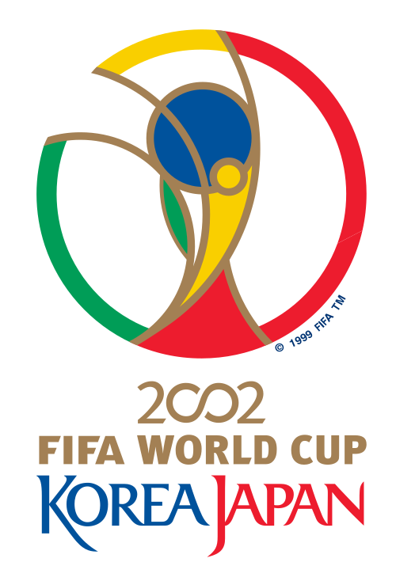
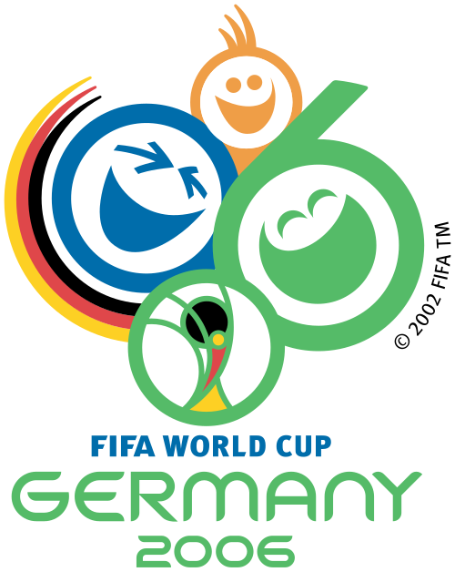
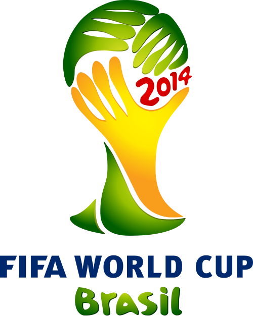
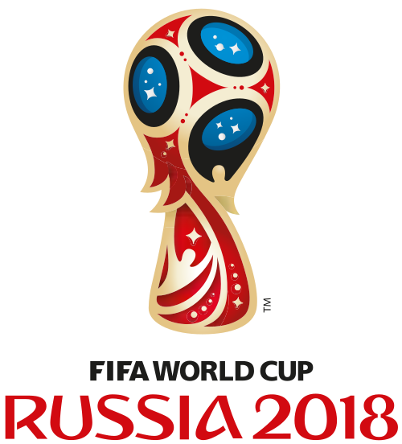
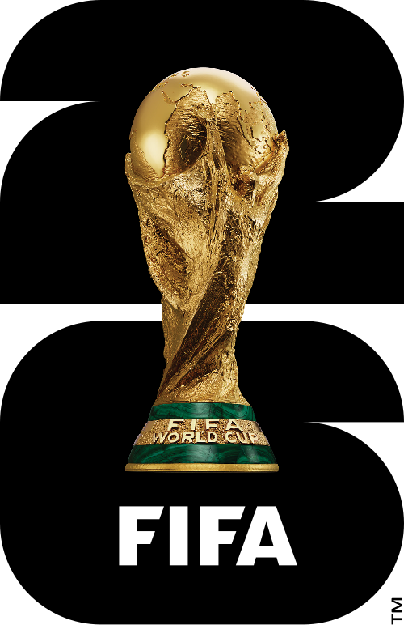

История финалов ЧМ в XXI веке
За первые четверть века было проведено семь финалов чемпионатов мира. Каждый из них оставил свой след в истории футбола — от уверенной победы Бразилии в 2002 году до драматичной серии пенальти в 2022-м.

Финал 2002 года прошёл в Йокогаме (Япония). Бразилия обыграла Германию со счётом 2:0 благодаря дублю Роналдо. Этот титул стал для Бразилии пятым в истории. Вратарь Оливер Кан был признан лучшим игроком турнира, несмотря на ошибку в решающем матче. Для сборной Германии это был первый финал после объединения страны.

Финал 2006 года в Берлине завершился вничью 1:1, а в серии пенальти победу праздновала Италия — 5:3. Зинедин Зидан открыл счёт, но был удалён в дополнительное время за удар головой в грудь Марко Матерацци. Это был его последний матч за сборную Франции. Италия стала четырёхкратным чемпионом мира.
В 2010 году Испания впервые в истории стала чемпионом мира, обыграв Нидерланды 1:0 в дополнительное время. Единственный гол забил Андрес Иньеста на 116-й минуте. Матч запомнился жёсткой игрой: судья показал 14 жёлтых карточек — рекорд для финалов.

Финал 2014 года на «Маракане» в Рио-де-Жанейро принёс Германии четвёртый титул. Марио Гётце забил единственный гол на 113-й минуте. Аргентина с Лионелем Месси в составе уступила в финале в третий раз за историю. Для Европы это был первый титул на американском континенте.

Финал 2018 года в Москве стал самым результативным с 1966 года: Франция обыграла Хорватию 4:2. Дубль оформил Антуан Гризманн, ещё по голу забили Поль Погба и Килиан Мбаппе. Хорватия впервые в истории дошла до финала. Мбаппе стал вторым подростком после Пеле, забившим в финале чемпионата мира.
Финал 2022 года в Лусаиле (Катар) многие называют лучшим в истории. Аргентина и Франция сыграли 3:3, а в серии пенальти точнее были аргентинцы — 4:2. Лионель Месси забил два гола и наконец получил Кубок мира. Килиан Мбаппе оформил хет-трик в финале — впервые с 1966 года. Матч прошёл в день 64-летия Пеле, который скончался через несколько дней.

Финал 2026 года прошёл на стадионе «Метлайф» в Ист-Ратерфорде (США). Испания обыграла Аргентину 1:0 в дополнительное время и стала двукратным чемпионом мира. Турнир впервые проводился в трёх странах и с участием 48 команд. Победа Испании закрепила её статус одной из сильнейших сборных XXI века.